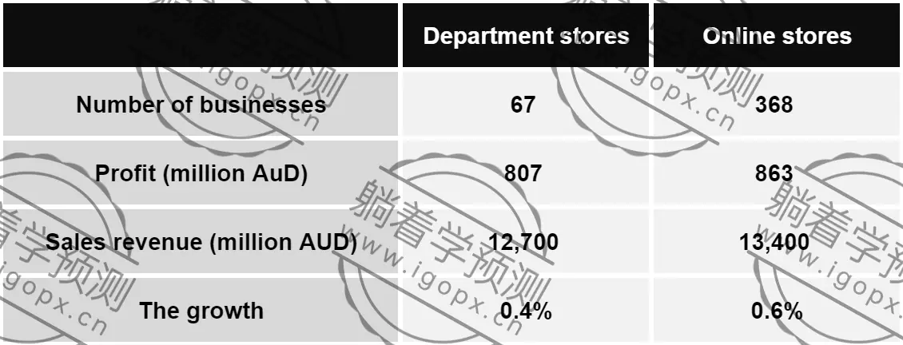

The table shows information about department stores and online stores in Australia in 2011.
Summarise the information by selecting and reporting the main features, and make comparisons where relevant.
Write at least 150 words.

The table provides information on the performance of department stores and online stores in Australia in 2011, covering the number of businesses, profit, sales revenue, and growth rate.
Overall, online stores outperformed department stores in most categories, with higher profits, sales revenue, and growth rates. However, department stores had a significantly smaller number of businesses.
In 2011, there were 67 department stores in Australia, which was much fewer than the 368 online stores. Despite having fewer businesses, department stores generated a sales revenue of 12,700 million AUD, accounting for a substantial portion of the total retail market. In contrast, online stores had a higher sales revenue of 13,400 million AUD, although they had significantly more businesses.
In terms of profit, online stores again led with 863 million AUD, surpassing the 807 million AUD earned by department stores. The growth rates of both sectors were relatively modest, but online stores had a slightly higher growth rate of 0.6%, compared to the 0.4% growth rate of department stores.
In summary, while department stores had fewer businesses, they were still able to generate significant revenue and profit. Online stores, on the other hand, had a larger number of businesses and a slightly higher performance in terms of profit, sales revenue, and growth.